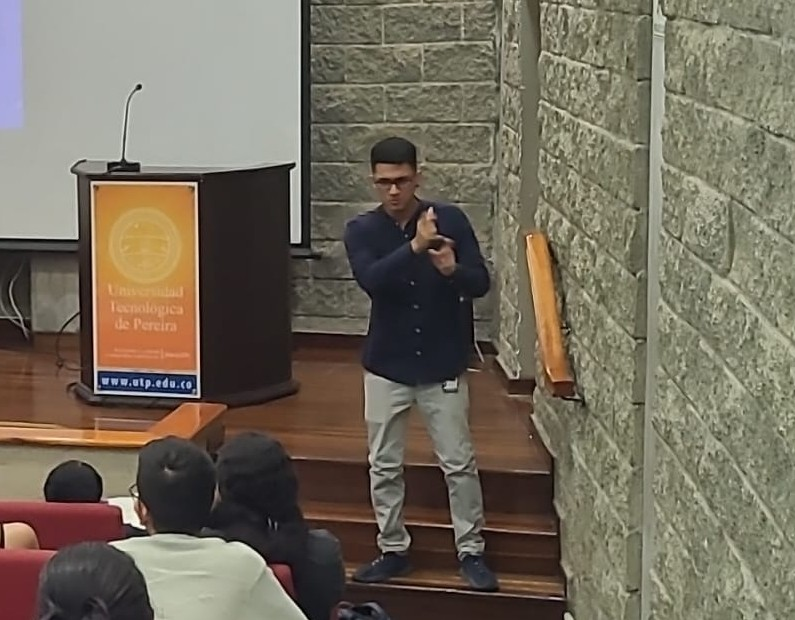

Si eres persona Sorda
Cuéntame cómo recibiste el servicio para ajustarlo a lo que necesitas.
- Aspectos propios del servicio de interpretación
- Aspectos lingüísticos de la interpretación y las traducciones
- Otros detalles que quieras señalar
Intérprete y traductor de Lengua de Señas Colombiana–Español (LSC-E)
Trabajo actualmente en la Universidad Tecnológica de Pereira (UTP), donde hago posible la comunicación entre la comunidad Sorda universitaria, los docentes y los demás actores del entorno académico. Mi servicio busca ser una alternativa de acceso real a la información y a la participación en la vida universitaria.

Trayectorias de movimiento en LSC: circular, espiral, ondulado, zigzag y lineal.
Un formulario permite hacer seguimiento tanto a la interpretación en el aula como a las traducciones. Sus respuestas ayudan a mejorar el servicio en lo lingüístico y en cada detalle que influye en la comunicación.
Cuéntame cómo recibiste el servicio para ajustarlo a lo que necesitas.
Evalúa el servicio durante la clase desde tu lugar en la comunicación.
Toma pocos minutos. Puedes abrirlo desde el botón o escanear el código QR con tu celular.

Interpretaciones y traducciones realizadas en cada asignatura, reunidas en un repositorio abierto a estudiantes y personas interesadas.